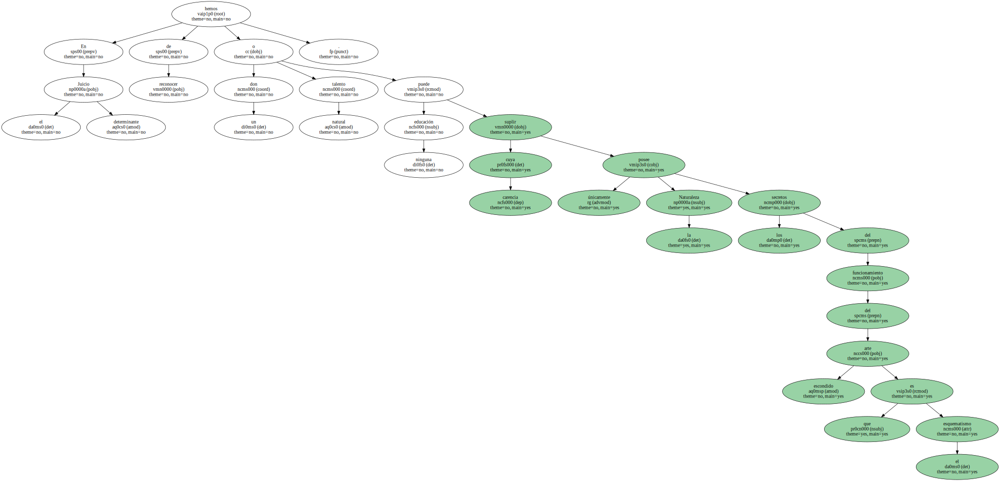
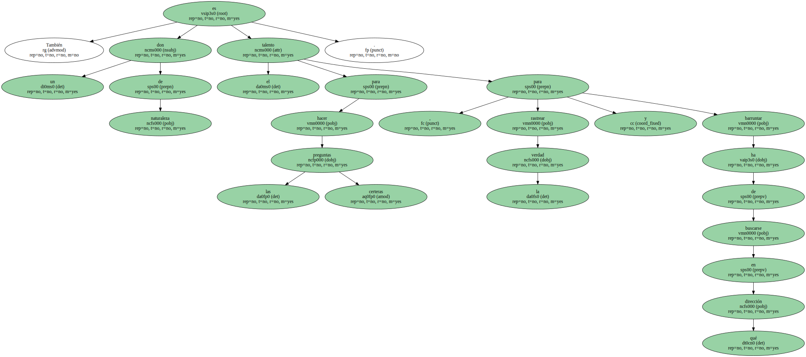
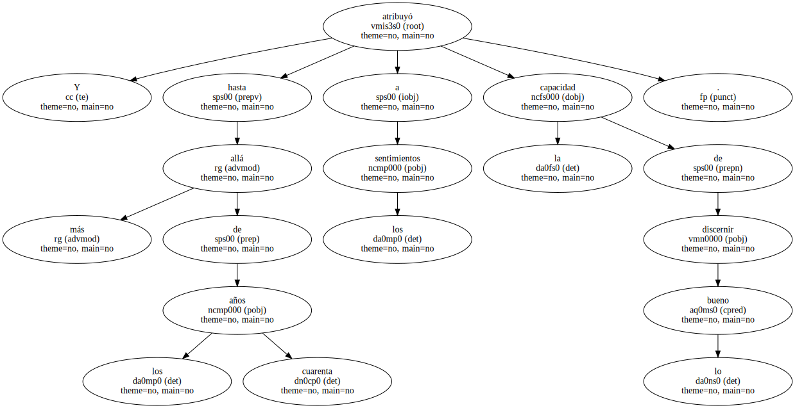
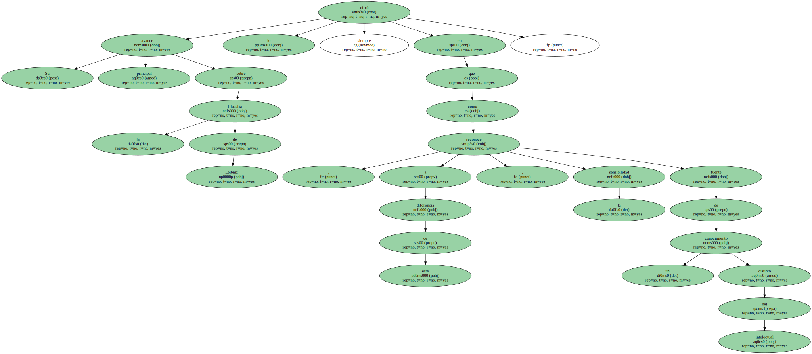
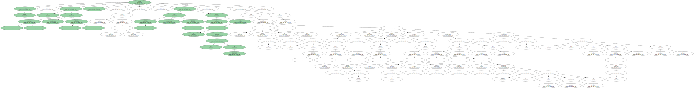
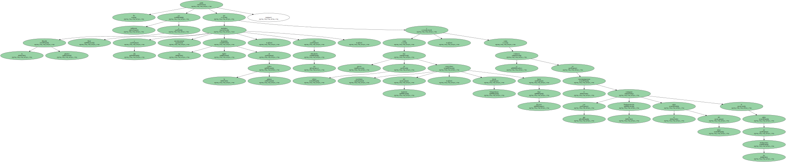
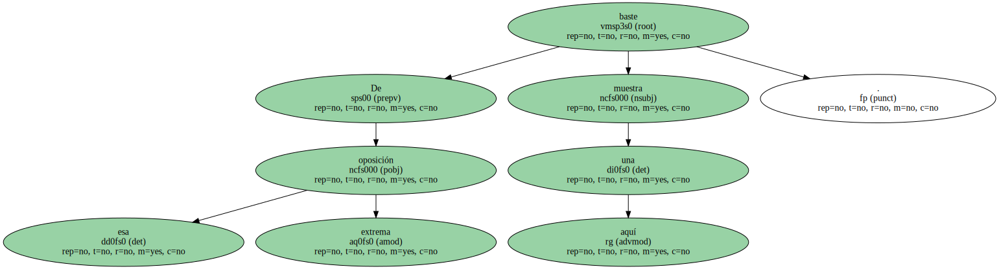
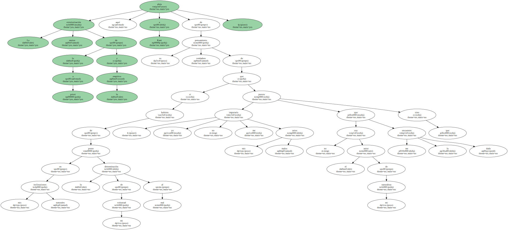
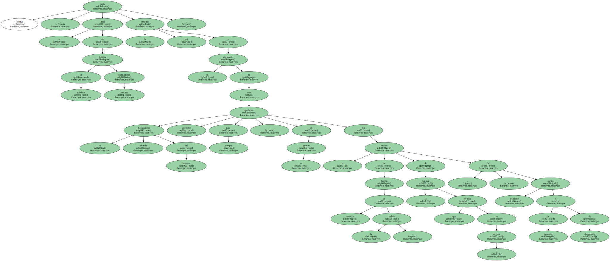

En el Juicio determinante hemos de reconocer un don o talento natural cuya carencia ninguna educación puede suplir únicamente la Naturaleza posee los secretos del funcionamiento del arte escondido que es el esquematismo.
También es un don de naturaleza el talento para hacer las preguntas certeras , para rastrear la verdad y barruntar en qué dirección ha de buscarse.
El genio finalmente , - es la capacidad espiritual innata ( ingenium ) mediante la cual la Naturaleza da la regla al arte , pero , lejos de ser por eso heterónoma , no cabe actividad más soberanamente libre que la de una creación genial.

En 1708 era en las tres dimensiones del cuerpo propio donde ponía el primer fundamento de la distinción de las regiones en el espacio.

Y hasta más allá de los cuarenta años atribuyó a los sentimientos la capacidad de discernir lo bueno.
Su principal avance sobre la filosofía de Leibniz lo cifró siempre en que , a diferencia de éste , reconoce la sensibilidad como fuente de un conocimiento distinto del intelectual.
Sin embargo , la dicotomía del a priori formal y la materia empírica le impide , en la Critica de la razón pura , reconocer entre lo sensible y lo intelectual otra distinción que la correspondiente a dos clases de representaciones , de modo que el mundo corpóreo en su totalidad no sería más que el fenómeno en la sensibilidad del sujeto ( A,383 ) , lo que vuelve vanos sus intentos de disipar la anfibología de los conceptos de reflexión y de justificar que , en el fenómeno , las categorías subsumen efectiva realidad exterior , puesto que la materia misma no es más que - pura representación del psiquismo , dice ( A , 387 y 391 ) , e incluso no es más que ¡ mera forma ! ( Die Materie ist nicht anders -LSB- ) ( A,385 ).
No podía ser indiferente a la filosofía práctica que trasladase Kant a ella mecánicamente las rígidas dicotomías de la primera Crítica , con sus dificultades , como han puesto de relieve excelentes conocedores del kantismo , desde Schopenhauer hasta Paul Ricoeur , y como se evidencia en el cuasimaniqueismo con que la Fundamentación contrapone el orden del deber al orden de las inclinaciones.
De esa oposición extrema baste aquí una muestra.
La mutua exteriorización de lo a priori y lo empírico aleja aquí a Kant de su verdadero pensamiento de que si hubiera de poner en mis inclinaciones naturales la determinación de mi voluntad al mal , yo no me imputaría mis actos malos puesto que no soy el autor de mi naturaleza sino que me la encuentro dada.
Además , el ideal de debilitar al máximo nuestras inclinaciones sería lo más contrario a su afirmación de que las disposiciones racionales del hombre quedarían dormidas para siempre - en su germen sin la tensión de fuerzas de la ambición , codicia , de la vanidad que rivaliza en la envidia , del apetito insaciable de posesión o de dominación.
